Look n°7
Dressing ouvert lumineux et rose poudré
Un grand dressing ouvert qui s'illumine le soir : rubans LED sous les étagères, lustre en cristal et lampe en plumes roses, avec une commode en îlot et un banc en bouclette. Voici les articles pour recréer ce look chez toi, même en commençant par une seule penderie.
-
Penderie ouverte blanche avec 3 tiroirs
Métal blanc et étagères blanches, 166 × 39 × 190 cm, tringles doubles et 3 tiroirs. Sur l'image, chaque mur compte environ 2 penderies côte à côte (4 en tout pour refaire la photo), avec des montants éclairés en plus. Vendue par iSunirm, livraison en 8 à 10 jours.
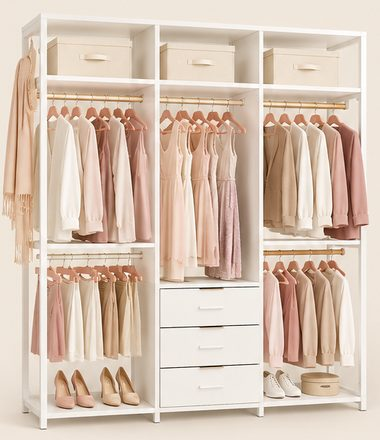
-
Cubes de rangement en tissu beige, lot de 6
Pliables, 26,5 × 26,5 × 28 cm, poignée en tissu. Un peu plus blancs sur l'image que dans la réalité.
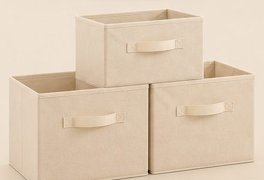
-
Ruban LED COB blanc chaud 5 m
Ligne de lumière continue (sans points), 3000 K, variateur et télécommande. Compte environ 3 rouleaux pour éclairer les étagères et le dessous de la commode comme sur la photo.
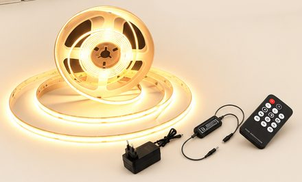
29,99 €Voir sur Amazon -
Miroir sur pied en arche, cadre doré fin
160 × 50 cm, cadre en aluminium doré clair, béquille noire, à poser ou à accrocher.
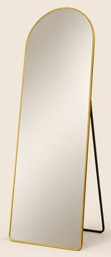
66,99 €Voir sur Amazon -
Banc coffre ovale en bouclette crème
110 × 45 × 42 cm, aspect 4 boudins, couvercle qui s'ouvre pour ranger.
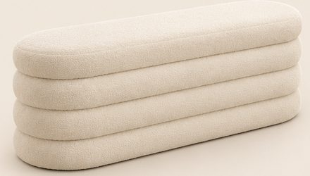
104,90 €Voir sur Amazon -
Tapis crème à motif en relief
Poil ras, relief en arches ton sur ton, 160 × 230 cm (existe en plusieurs tailles).
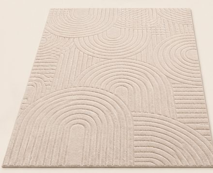
69,99 €Voir sur Amazon -
Commode blanche cannelée à pieds dorés
6 tiroirs, façade à rainures verticales, poignées et pieds dorés, 120 × 40 × 76,5 cm. Ici posée en îlot au centre du dressing.
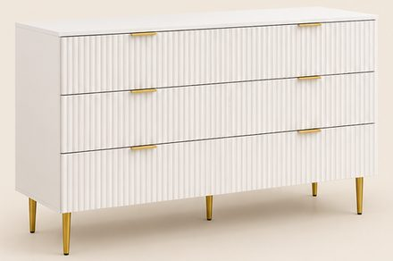
168,90 €Voir sur Amazon -
Étagère colonne blanche 7 niveaux
30 × 28 × 190 cm, en zigzag (ou 2 colonnes de 4 niveaux). Sur l'image, la colonne est droite et plus large que le vrai modèle.
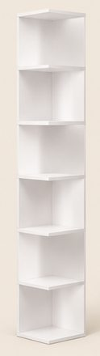
-
Lampe à poser en plumes roses
Abat-jour en plumes d'autruche de 45 cm, pied doré, 50 cm de haut. Article récent avec peu d'avis, livraison plus longue (vendeur hors Amazon).
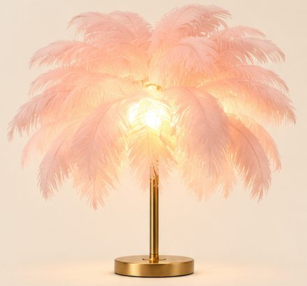
43,99 €Voir sur Amazon -
Petit lustre en cristal doré, 3 lumières
Plafonnier doré à 3 abat-jour cylindriques en cristal (ampoules non fournies).
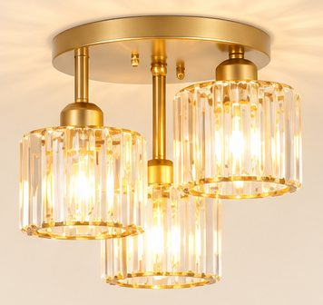
51,99 €Voir sur Amazon -
Vase nervuré beige et pivoines roses
Vase cylindrique en céramique à fines rainures et 4 bouquets de pivoines artificielles rose clair.
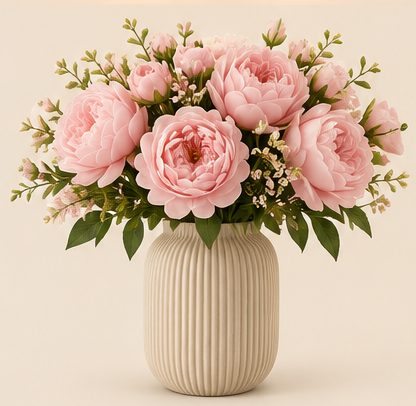
-
Mini plantes artificielles, lot de 7
Eucalyptus et succulentes d'environ 22 cm. Les vrais pots sont effet béton gris clair (blancs sur l'image).
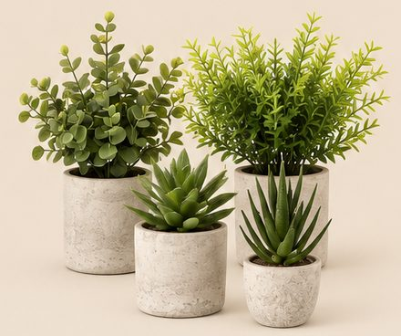
-
Cintres en velours rose, lot de 50
Fins et antidérapants, rose carné avec crochets dorés rosés. Il en faut 2 lots pour remplir les penderies de la photo.
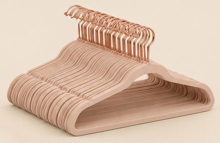
20,79 €Voir sur Amazon
Enregistrer ce look sur Pinterest
Image d'inspiration générée par IA. Les prix sont indicatifs et peuvent changer sur Amazon.